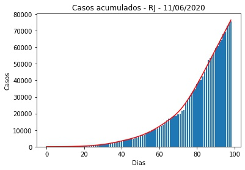
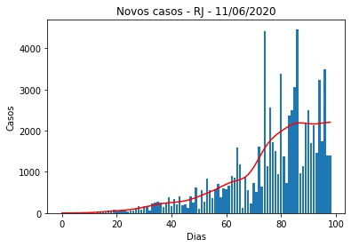
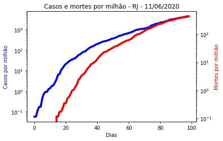
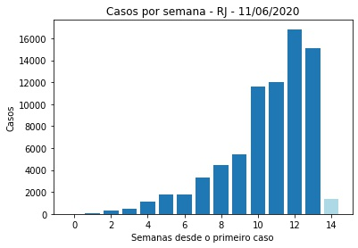
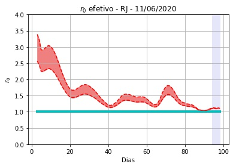

RJ - 11/06/2020.
Detalhes técnicos, aqui. Clique aqui para uma versão em PDF desta análise.
População: 17.264.943
Datas do primeiro e do último elementos na série: 3/5/2020 e 6/11/2020. Número de elementos na série: 99 (14 semanas e 1 dias).
Número de casos totais e mortes por milhão de habitantes: 4.389 e 426
r0 efetivo médio (duas últimas semanas - três dias de atraso): 1,10 (std = 0,06).
Último intervalo para r0 (três dias de atraso): (1,12 : 1,16).
Limiar imunidade de rebanho nR (baseado na última semana - três dias de atraso) = 0,18 (0,13 : 0,23)
Previsão do número total de casos para os próximos 5 dias: 77.957, 80.139, 82.321, 84.504, 86.686.
 
 
